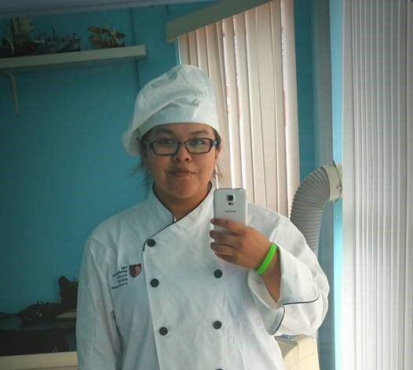
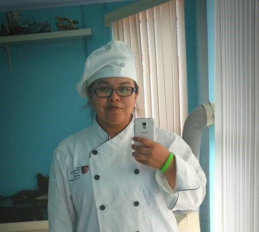
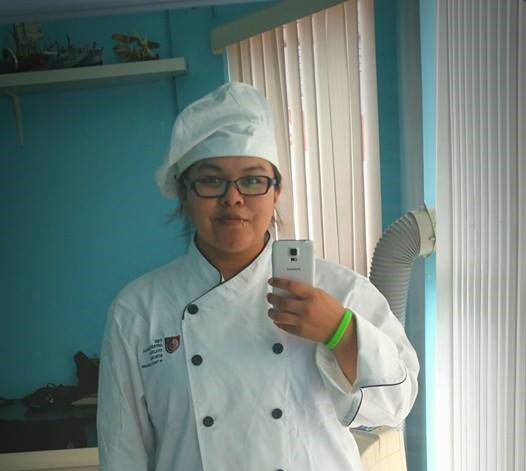

Ever since I was young I used to help my Mother, Aunt, and Grandmother bake, I prefured staying inside with them while the other kids would always be wanting to go outside to play.
I learned how to bake bread when I was 13 and have been doing it for my family ever since. The recipe my mother handed down to me belonged to my Grandmothers - Grandmother. I have it written down but I know it by heart now a days.
After I graduated from highschool I was pondering what I wanted to do with the rest of my life. I've been on many different roads since then, but deciding to go to Culinary School in Vancouver was one of my best decisions.
I've learned a lot about cooking and baking in my lifetime and it's one of the things I will never get tired of learning. I hope to become better at the cooking aspect as I get older, but baking will always be my first passion. --- Amy G.
